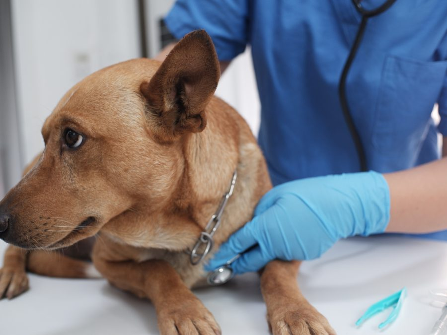
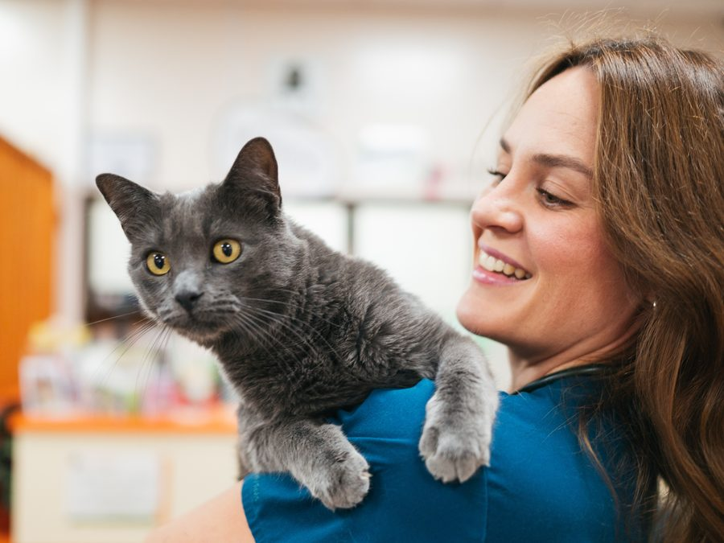

Dr. Jennifer Dolan
Owner & Veterinarian
Dr. Dolan grew up in Reston, Virginia, a suburb of Washington, D.C.
Meet the veterinarians and team of Cumberland Valley Veterinary Clinic in Hagerstown. We're pleased to provide exceptional vet care for your pets.
Call (301) 739-3121Our caring and compassionate veterinary care team! Meet the Veterinarians & Team of Cumberland Valley Veterinary Clinic in Hagerstown! We’re pleased to provide exceptional vet care for your pets! Please call us at 301-739-3121 to speak to one of our caring veterinary staff members!
Dr. Dolan grew up in Reston, Virginia, a suburb of Washington, D.C.
A 1986 graduate of the Virginia-Maryland Regional College of Veterinary Medicine.
Gettysburg College and Towson State University, then veterinary school at Virginia-Maryland.
Tammy Snyder is the practice manager and Tara Martin is the business manager at Cumberland Valley Veterinary Clinic. Both have been with the practice since 1996. Together, they handle the daily operations of the clinic.
Our client service representatives are the front line of customer service at Cumberland Valley Veterinary Clinic. Whether they are answering your phone call, checking you in for a visit with the doctor, or scheduling a future appointment, the client service representatives strive to make your experience at Cumberland Valley a pleasant one.

Our veterinary technicians and veterinary nurses are instrumental in providing the highest quality veterinary care for your pet. They work closely with the veterinarians to provide diagnostic care, hospitalization, treatment, as well as some routine services such as nail clips and anal gland expressions. Our technicians and nurses are on staff throughout our entire business day to provide care for hospitalized animals, support for our doctors during appointments, and to provide client education.

Our assistants are responsible for providing hands-on assistance to the doctors and veterinary technicians during surgical procedures and x-rays. They also assist in the clean up of all surgical equipment. Another responsibility of the veterinary assistant is to release and provide client education for the after care of patients who are hospitalized for illnesses and surgery.
Please call us to speak to one of our caring veterinary staff members.
(301) 739-3121